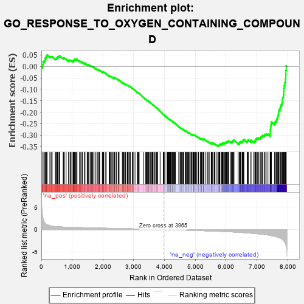
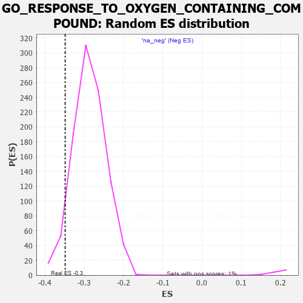

| | | Dataset | 7d |
| Phenotype | NoPhenotypeAvailable |
| Upregulated in class | na_neg |
| GeneSet | GO_RESPONSE_TO_OXYGEN_CONTAINING_COMPOUND |
| Enrichment Score (ES) | -0.3487736 |
| Normalized Enrichment Score (NES) | -1.2173837 |
| Nominal p-value | 0.04959514 |
| FDR q-value | 0.6033163 |
| FWER p-Value | 1.0 |
Table: GSEA Results Summary

Fig 1: Enrichment plot: GO_RESPONSE_TO_OXYGEN_CONTAINING_COMPOUND
Profile of the Running ES Score & Positions of GeneSet Members on the Rank Ordered List
| PROBE | GENE SYMBOL | GENE_TITLE | RANK IN GENE LIST | RANK METRIC SCORE | RUNNING ES | CORE ENRICHMENT | | 1 | TGFB3 | | | 49 | 2.654 | 0.0085 | No |
| 2 | MC4R | | | 57 | 2.491 | 0.0215 | No |
| 3 | IRS1 | | | 98 | 1.659 | 0.0256 | No |
| 4 | ADCY8 | | | 124 | 1.418 | 0.0302 | No |
| 5 | GLB1 | | | 125 | 1.416 | 0.0382 | No |
| 6 | CSRP3 | | | 161 | 1.186 | 0.0402 | No |
| 7 | SPI1 | | | 162 | 1.182 | 0.0469 | No |
| 8 | RORB | | | 189 | 1.097 | 0.0496 | No |
| 9 | HGF | | | 276 | 0.870 | 0.0432 | No |
| 10 | KLF11 | | | 318 | 0.788 | 0.0423 | No |
| 11 | GSK3A | | | 351 | 0.745 | 0.0423 | No |
| 12 | ERCC1 | | | 453 | 0.660 | 0.0327 | No |
| 13 | LRP1 | | | 470 | 0.648 | 0.0343 | No |
| 14 | OVCA2 | | | 496 | 0.631 | 0.0345 | No |
| 15 | MYOD1 | | | 504 | 0.628 | 0.0371 | No |
| 16 | RWDD1 | | | 526 | 0.621 | 0.0379 | No |
| 17 | HTRA2 | | | 527 | 0.621 | 0.0414 | No |
| 18 | SRF | | | 542 | 0.615 | 0.0430 | No |
| 19 | APEX1 | | | 577 | 0.604 | 0.0419 | No |
| 20 | CCNB1 | | | 581 | 0.601 | 0.0449 | No |
| 21 | PITX3 | | | 594 | 0.596 | 0.0466 | No |
| 22 | CDC6 | | | 709 | 0.557 | 0.0348 | No |
| 23 | ID1 | | | 719 | 0.555 | 0.0368 | No |
| 24 | ELK1 | | | 752 | 0.545 | 0.0356 | No |
| 25 | BLM | | | 804 | 0.531 | 0.0319 | No |
| 26 | RMI1 | | | 886 | 0.509 | 0.0242 | No |
| 27 | HMGB2 | | | 892 | 0.507 | 0.0264 | No |
| 28 | HDAC5 | | | 900 | 0.506 | 0.0283 | No |
| 29 | PDCD4 | | | 941 | 0.497 | 0.0259 | No |
| 30 | CTR9 | | | 964 | 0.492 | 0.0257 | No |
| 31 | MEN1 | | | 1003 | 0.483 | 0.0235 | No |
| 32 | AKT1 | | | 1040 | 0.476 | 0.0214 | No |
| 33 | YAP1 | | | 1041 | 0.475 | 0.0241 | No |
| 34 | MEF2C | | | 1054 | 0.473 | 0.0252 | No |
| 35 | AP3S1 | | | 1063 | 0.471 | 0.0268 | No |
| 36 | FZD10 | | | 1065 | 0.470 | 0.0293 | No |
| 37 | AIFM1 | | | 1072 | 0.469 | 0.0311 | No |
| 38 | RAD51 | | | 1090 | 0.466 | 0.0315 | No |
| 39 | G6PC | | | 1121 | 0.459 | 0.0301 | No |
| 40 | SRC | | | 1128 | 0.459 | 0.0319 | No |
| 41 | GAB1 | | | 1158 | 0.453 | 0.0307 | No |
| 42 | KAT7 | | | 1240 | 0.440 | 0.0225 | No |
| 43 | CDC73 | | | 1265 | 0.436 | 0.0218 | No |
| 44 | CCS | | | 1302 | 0.427 | 0.0195 | No |
| 45 | UBR2 | | | 1334 | 0.423 | 0.0178 | No |
| 46 | NOCT | | | 1402 | 0.409 | 0.0113 | No |
| 47 | CARM1 | | | 1413 | 0.408 | 0.0123 | No |
| 48 | P2RY1 | | | 1416 | 0.407 | 0.0143 | No |
| 49 | GPT | | | 1488 | 0.392 | 0.0072 | No |
| 50 | INHBB | | | 1514 | 0.388 | 0.0061 | No |
| 51 | LIAS | | | 1524 | 0.387 | 0.0071 | No |
| 52 | SOS1 | | | 1547 | 0.384 | 0.0064 | No |
| 53 | PAF1 | | | 1588 | 0.376 | 0.0033 | No |
| 54 | CDK4 | | | 1626 | 0.370 | 0.0005 | No |
| 55 | RXRA | | | 1647 | 0.365 | -0.0001 | No |
| 56 | BACE1 | | | 1673 | 0.360 | -0.0013 | No |
| 57 | DDX18 | | | 1711 | 0.355 | -0.0042 | No |
| 58 | LRP5 | | | 1769 | 0.342 | -0.0097 | No |
| 59 | ABR | | | 1812 | 0.335 | -0.0133 | No |
| 60 | GATA4 | | | 1837 | 0.330 | -0.0146 | No |
| 61 | TRIM5 | | | 1852 | 0.327 | -0.0146 | No |
| 62 | NCOA5 | | | 1884 | 0.322 | -0.0169 | No |
| 63 | GLRA2 | | | 1892 | 0.321 | -0.0160 | No |
| 64 | BRSK2 | | | 1979 | 0.308 | -0.0255 | No |
| 65 | GPX4 | | | 1989 | 0.306 | -0.0250 | No |
| 66 | FOXO4 | | | 2004 | 0.304 | -0.0251 | No |
| 67 | RAF1 | | | 2011 | 0.303 | -0.0242 | No |
| 68 | DMAP1 | | | 2025 | 0.301 | -0.0242 | No |
| 69 | KCNC2 | | | 2075 | 0.295 | -0.0290 | No |
| 70 | BMP7 | | | 2107 | 0.290 | -0.0314 | No |
| 71 | C2CD5 | | | 2204 | 0.276 | -0.0424 | No |
| 72 | TRAP1 | | | 2219 | 0.274 | -0.0427 | No |
| 73 | CDK2 | | | 2226 | 0.272 | -0.0420 | No |
| 74 | CREB1 | | | 2243 | 0.269 | -0.0426 | No |
| 75 | XRCC1 | | | 2287 | 0.262 | -0.0467 | No |
| 76 | SRSF4 | | | 2311 | 0.258 | -0.0483 | No |
| 77 | CDC5L | | | 2353 | 0.253 | -0.0523 | No |
| 78 | MIF | | | 2357 | 0.252 | -0.0512 | No |
| 79 | RNLS | | | 2358 | 0.252 | -0.0498 | No |
| 80 | SIN3A | | | 2361 | 0.251 | -0.0487 | No |
| 81 | NDOR1 | | | 2372 | 0.250 | -0.0486 | No |
| 82 | OTUD5 | | | 2385 | 0.247 | -0.0488 | No |
| 83 | MET | | | 2430 | 0.240 | -0.0532 | No |
| 84 | KDM1A | | | 2447 | 0.237 | -0.0540 | No |
| 85 | KAT2B | | | 2502 | 0.226 | -0.0598 | No |
| 86 | CDT1 | | | 2505 | 0.226 | -0.0588 | No |
| 87 | MBD3 | | | 2524 | 0.223 | -0.0599 | No |
| 88 | GNPAT | | | 2629 | 0.208 | -0.0723 | No |
| 89 | KAT5 | | | 2644 | 0.206 | -0.0730 | No |
| 90 | GRB14 | | | 2666 | 0.204 | -0.0746 | No |
| 91 | WDR83 | | | 2669 | 0.203 | -0.0737 | No |
| 92 | SASH1 | | | 2682 | 0.201 | -0.0742 | No |
| 93 | PHB2 | | | 2712 | 0.197 | -0.0768 | No |
| 94 | SLIT2 | | | 2724 | 0.195 | -0.0772 | No |
| 95 | RORA | | | 2730 | 0.193 | -0.0768 | No |
| 96 | XRN1 | | | 2786 | 0.185 | -0.0829 | No |
| 97 | AQP3 | | | 2796 | 0.184 | -0.0831 | No |
| 98 | FER | | | 2803 | 0.183 | -0.0828 | No |
| 99 | SYAP1 | | | 2811 | 0.182 | -0.0827 | No |
| 100 | PCK2 | | | 2823 | 0.180 | -0.0832 | No |
| 101 | WDTC1 | | | 2865 | 0.172 | -0.0876 | No |
| 102 | DCPS | | | 2873 | 0.170 | -0.0875 | No |
| 103 | FGFR2 | | | 2895 | 0.167 | -0.0893 | No |
| 104 | RAB10 | | | 2952 | 0.157 | -0.0958 | No |
| 105 | BTK | | | 2958 | 0.156 | -0.0956 | No |
| 106 | ANO1 | | | 2982 | 0.152 | -0.0977 | No |
| 107 | UFL1 | | | 3041 | 0.144 | -0.1045 | No |
| 108 | GPX1 | | | 3109 | 0.135 | -0.1125 | No |
| 109 | OGG1 | | | 3135 | 0.132 | -0.1151 | No |
| 110 | EDEM2 | | | 3145 | 0.131 | -0.1155 | No |
| 111 | GCH1 | | | 3166 | 0.127 | -0.1174 | No |
| 112 | AHR | | | 3175 | 0.126 | -0.1178 | No |
| 113 | RAB8A | | | 3319 | 0.102 | -0.1359 | No |
| 114 | PPAT | | | 3382 | 0.091 | -0.1435 | No |
| 115 | MED1 | | | 3405 | 0.089 | -0.1459 | No |
| 116 | SARM1 | | | 3432 | 0.086 | -0.1488 | No |
| 117 | RXRG | | | 3435 | 0.085 | -0.1486 | No |
| 118 | PTPRK | | | 3454 | 0.084 | -0.1505 | No |
| 119 | LDHA | | | 3479 | 0.080 | -0.1532 | No |
| 120 | CDK5 | | | 3480 | 0.080 | -0.1527 | No |
| 121 | RGS8 | | | 3490 | 0.079 | -0.1535 | No |
| 122 | FES | | | 3501 | 0.077 | -0.1543 | No |
| 123 | PRDX5 | | | 3547 | 0.068 | -0.1598 | No |
| 124 | TNS2 | | | 3588 | 0.062 | -0.1647 | No |
| 125 | MAPK3 | | | 3589 | 0.062 | -0.1644 | No |
| 126 | STK25 | | | 3602 | 0.059 | -0.1656 | No |
| 127 | CBL | | | 3621 | 0.056 | -0.1677 | No |
| 128 | FIS1 | | | 3654 | 0.051 | -0.1716 | No |
| 129 | CD180 | | | 3686 | 0.046 | -0.1754 | No |
| 130 | HSF1 | | | 3718 | 0.039 | -0.1792 | No |
| 131 | HTR1B | | | 3745 | 0.035 | -0.1824 | No |
| 132 | LPIN3 | | | 3751 | 0.034 | -0.1829 | No |
| 133 | SRSF2 | | | 3759 | 0.033 | -0.1836 | No |
| 134 | SBNO2 | | | 3774 | 0.032 | -0.1853 | No |
| 135 | DGKQ | | | 3856 | 0.020 | -0.1958 | No |
| 136 | GLRA1 | | | 3957 | 0.001 | -0.2089 | No |
| 137 | IGF1R | | | 3970 | -0.002 | -0.2104 | No |
| 138 | CRLS1 | | | 3975 | -0.003 | -0.2109 | No |
| 139 | VPS35 | | | 3989 | -0.006 | -0.2126 | No |
| 140 | PARP1 | | | 4014 | -0.010 | -0.2157 | No |
| 141 | WNT2 | | | 4084 | -0.021 | -0.2246 | No |
| 142 | PDE4B | | | 4089 | -0.022 | -0.2250 | No |
| 143 | PDE8A | | | 4097 | -0.023 | -0.2258 | No |
| 144 | MTOR | | | 4114 | -0.025 | -0.2277 | No |
| 145 | ABL1 | | | 4125 | -0.027 | -0.2289 | No |
| 146 | CRK | | | 4139 | -0.031 | -0.2304 | No |
| 147 | HMGCL | | | 4141 | -0.031 | -0.2304 | No |
| 148 | HNF4A | | | 4157 | -0.034 | -0.2321 | No |
| 149 | GFI1 | | | 4168 | -0.037 | -0.2333 | No |
| 150 | PDX1 | | | 4179 | -0.038 | -0.2343 | No |
| 151 | FMO1 | | | 4181 | -0.038 | -0.2343 | No |
| 152 | RRAGD | | | 4183 | -0.039 | -0.2342 | No |
| 153 | UNC79 | | | 4184 | -0.039 | -0.2340 | No |
| 154 | SESN1 | | | 4192 | -0.041 | -0.2346 | No |
| 155 | ENY2 | | | 4195 | -0.041 | -0.2347 | No |
| 156 | GGT7 | | | 4200 | -0.041 | -0.2350 | No |
| 157 | TIMP1 | | | 4209 | -0.043 | -0.2358 | No |
| 158 | RRAGA | | | 4223 | -0.046 | -0.2372 | No |
| 159 | LRP11 | | | 4250 | -0.050 | -0.2403 | No |
| 160 | AGAP3 | | | 4251 | -0.050 | -0.2401 | No |
| 161 | RPTOR | | | 4252 | -0.050 | -0.2398 | No |
| 162 | WNT11 | | | 4282 | -0.056 | -0.2433 | No |
| 163 | USF1 | | | 4296 | -0.059 | -0.2446 | No |
| 164 | ROMO1 | | | 4320 | -0.063 | -0.2473 | No |
| 165 | TSHR | | | 4322 | -0.063 | -0.2471 | No |
| 166 | OPA1 | | | 4330 | -0.065 | -0.2476 | No |
| 167 | ADRB2 | | | 4352 | -0.068 | -0.2500 | No |
| 168 | ERCC6 | | | 4464 | -0.087 | -0.2640 | No |
| 169 | LRRK2 | | | 4467 | -0.087 | -0.2638 | No |
| 170 | EPS8 | | | 4474 | -0.088 | -0.2641 | No |
| 171 | SNW1 | | | 4514 | -0.096 | -0.2687 | No |
| 172 | WNT5B | | | 4517 | -0.098 | -0.2684 | No |
| 173 | NTRK2 | | | 4543 | -0.104 | -0.2711 | No |
| 174 | APC | | | 4558 | -0.107 | -0.2723 | No |
| 175 | MPV17 | | | 4575 | -0.112 | -0.2738 | No |
| 176 | CMA1 | | | 4580 | -0.114 | -0.2736 | No |
| 177 | GATA3 | | | 4614 | -0.120 | -0.2773 | No |
| 178 | SDK1 | | | 4627 | -0.124 | -0.2782 | No |
| 179 | CLK2 | | | 4628 | -0.124 | -0.2775 | No |
| 180 | MTAP | | | 4675 | -0.133 | -0.2827 | No |
| 181 | PTK7 | | | 4687 | -0.136 | -0.2834 | No |
| 182 | GDAP2 | | | 4689 | -0.137 | -0.2828 | No |
| 183 | RAP1B | | | 4706 | -0.140 | -0.2841 | No |
| 184 | CPEB2 | | | 4709 | -0.141 | -0.2836 | No |
| 185 | EDEM3 | | | 4746 | -0.148 | -0.2874 | No |
| 186 | PIM1 | | | 4776 | -0.152 | -0.2904 | No |
| 187 | WBP2 | | | 4780 | -0.153 | -0.2899 | No |
| 188 | MYO5A | | | 4787 | -0.155 | -0.2898 | No |
| 189 | P2RX4 | | | 4813 | -0.161 | -0.2922 | No |
| 190 | USO1 | | | 4855 | -0.168 | -0.2966 | No |
| 191 | SIK2 | | | 4875 | -0.172 | -0.2982 | No |
| 192 | CLU | | | 4889 | -0.174 | -0.2989 | No |
| 193 | SLIT3 | | | 4890 | -0.175 | -0.2979 | No |
| 194 | CBX3 | | | 4923 | -0.183 | -0.3011 | No |
| 195 | CASP1 | | | 4932 | -0.185 | -0.3011 | No |
| 196 | FZD4 | | | 4940 | -0.186 | -0.3009 | No |
| 197 | XRCC5 | | | 4946 | -0.187 | -0.3006 | No |
| 198 | CHMP5 | | | 4952 | -0.188 | -0.3002 | No |
| 199 | PRKDC | | | 4955 | -0.189 | -0.2994 | No |
| 200 | TRA2B | | | 4962 | -0.191 | -0.2991 | No |
| 201 | AOC1 | | | 4993 | -0.197 | -0.3019 | No |
| 202 | KLF4 | | | 5005 | -0.198 | -0.3022 | No |
| 203 | PDPK1 | | | 5043 | -0.207 | -0.3059 | No |
| 204 | DRD2 | | | 5088 | -0.221 | -0.3104 | No |
| 205 | DDX11 | | | 5102 | -0.225 | -0.3109 | No |
| 206 | MMP9 | | | 5108 | -0.227 | -0.3102 | No |
| 207 | TBX1 | | | 5166 | -0.241 | -0.3164 | No |
| 208 | HDAC6 | | | 5183 | -0.244 | -0.3171 | No |
| 209 | SMO | | | 5195 | -0.247 | -0.3171 | No |
| 210 | IPO5 | | | 5207 | -0.248 | -0.3172 | No |
| 211 | ATM | | | 5210 | -0.249 | -0.3161 | No |
| 212 | IDE | | | 5252 | -0.258 | -0.3200 | No |
| 213 | SSH1 | | | 5254 | -0.258 | -0.3187 | No |
| 214 | PTEN | | | 5262 | -0.261 | -0.3181 | No |
| 215 | CDK1 | | | 5264 | -0.262 | -0.3168 | No |
| 216 | EPHA4 | | | 5273 | -0.265 | -0.3163 | No |
| 217 | CD9 | | | 5319 | -0.277 | -0.3207 | No |
| 218 | GRIN1 | | | 5381 | -0.291 | -0.3270 | No |
| 219 | PRDX3 | | | 5389 | -0.293 | -0.3263 | No |
| 220 | GCNT1 | | | 5426 | -0.301 | -0.3293 | No |
| 221 | CPT1A | | | 5467 | -0.311 | -0.3328 | No |
| 222 | VDR | | | 5517 | -0.325 | -0.3374 | No |
| 223 | CERS1 | | | 5518 | -0.325 | -0.3356 | No |
| 224 | EDEM1 | | | 5541 | -0.331 | -0.3366 | No |
| 225 | SIDT2 | | | 5542 | -0.331 | -0.3348 | No |
| 226 | FOLR2 | | | 5563 | -0.336 | -0.3355 | No |
| 227 | SPHK1 | | | 5576 | -0.339 | -0.3352 | No |
| 228 | LARP1 | | | 5616 | -0.349 | -0.3383 | No |
| 229 | G6PD | | | 5638 | -0.358 | -0.3391 | No |
| 230 | CASP8 | | | 5678 | -0.369 | -0.3421 | No |
| 231 | CALCR | | | 5730 | -0.386 | -0.3466 | Yes |
| 232 | ENSA | | | 5739 | -0.388 | -0.3455 | Yes |
| 233 | TLR2 | | | 5761 | -0.395 | -0.3460 | Yes |
| 234 | CIB2 | | | 5774 | -0.398 | -0.3454 | Yes |
| 235 | GLRB | | | 5776 | -0.398 | -0.3433 | Yes |
| 236 | TRPC6 | | | 5784 | -0.401 | -0.3419 | Yes |
| 237 | PMVK | | | 5792 | -0.403 | -0.3406 | Yes |
| 238 | ADA | | | 5798 | -0.405 | -0.3390 | Yes |
| 239 | STRN3 | | | 5849 | -0.417 | -0.3432 | Yes |
| 240 | ATG7 | | | 5858 | -0.420 | -0.3419 | Yes |
| 241 | STAT4 | | | 5867 | -0.424 | -0.3405 | Yes |
| 242 | CDK16 | | | 5869 | -0.425 | -0.3383 | Yes |
| 243 | RAB13 | | | 5870 | -0.425 | -0.3359 | Yes |
| 244 | SZT2 | | | 5882 | -0.429 | -0.3349 | Yes |
| 245 | CDO1 | | | 5892 | -0.432 | -0.3337 | Yes |
| 246 | KCNQ1 | | | 5918 | -0.441 | -0.3345 | Yes |
| 247 | PCGF2 | | | 5943 | -0.451 | -0.3351 | Yes |
| 248 | ACTN2 | | | 5960 | -0.458 | -0.3346 | Yes |
| 249 | GABPA | | | 5977 | -0.464 | -0.3341 | Yes |
| 250 | SCAP | | | 5986 | -0.466 | -0.3326 | Yes |
| 251 | PTPRN | | | 6007 | -0.474 | -0.3325 | Yes |
| 252 | XBP1 | | | 6011 | -0.475 | -0.3303 | Yes |
| 253 | TRPC3 | | | 6035 | -0.483 | -0.3306 | Yes |
| 254 | RAC1 | | | 6036 | -0.484 | -0.3278 | Yes |
| 255 | JAG1 | | | 6060 | -0.494 | -0.3281 | Yes |
| 256 | CALR | | | 6077 | -0.499 | -0.3274 | Yes |
| 257 | FBN1 | | | 6080 | -0.499 | -0.3249 | Yes |
| 258 | ROCK1 | | | 6152 | -0.520 | -0.3312 | Yes |
| 259 | EGR1 | | | 6165 | -0.527 | -0.3299 | Yes |
| 260 | KLF2 | | | 6182 | -0.532 | -0.3290 | Yes |
| 261 | INSR | | | 6204 | -0.538 | -0.3287 | Yes |
| 262 | SMAD2 | | | 6216 | -0.541 | -0.3271 | Yes |
| 263 | TPM1 | | | 6226 | -0.545 | -0.3252 | Yes |
| 264 | RGN | | | 6233 | -0.547 | -0.3229 | Yes |
| 265 | TFAP4 | | | 6254 | -0.556 | -0.3225 | Yes |
| 266 | TRPM4 | | | 6390 | -0.612 | -0.3367 | Yes |
| 267 | CSK | | | 6428 | -0.630 | -0.3380 | Yes |
| 268 | MALT1 | | | 6432 | -0.634 | -0.3348 | Yes |
| 269 | ABCA2 | | | 6433 | -0.634 | -0.3313 | Yes |
| 270 | SRR | | | 6464 | -0.646 | -0.3316 | Yes |
| 271 | GLRA3 | | | 6469 | -0.648 | -0.3285 | Yes |
| 272 | TRPV4 | | | 6515 | -0.668 | -0.3306 | Yes |
| 273 | VAMP2 | | | 6525 | -0.672 | -0.3280 | Yes |
| 274 | KANK1 | | | 6536 | -0.678 | -0.3256 | Yes |
| 275 | STK24 | | | 6550 | -0.684 | -0.3234 | Yes |
| 276 | OTOP1 | | | 6562 | -0.690 | -0.3210 | Yes |
| 277 | P2RX5 | | | 6576 | -0.699 | -0.3188 | Yes |
| 278 | MPC2 | | | 6683 | -0.753 | -0.3284 | Yes |
| 279 | PAK1 | | | 6691 | -0.757 | -0.3251 | Yes |
| 280 | EGFR | | | 6708 | -0.765 | -0.3229 | Yes |
| 281 | GSK3B | | | 6719 | -0.768 | -0.3199 | Yes |
| 282 | NET1 | | | 6803 | -0.816 | -0.3262 | Yes |
| 283 | ADAM9 | | | 6808 | -0.819 | -0.3222 | Yes |
| 284 | HCN1 | | | 6895 | -0.865 | -0.3286 | Yes |
| 285 | LRP8 | | | 6931 | -0.889 | -0.3282 | Yes |
| 286 | GHSR | | | 6937 | -0.894 | -0.3238 | Yes |
| 287 | DNM1L | | | 6963 | -0.913 | -0.3220 | Yes |
| 288 | PIM3 | | | 6964 | -0.914 | -0.3168 | Yes |
| 289 | PDE2A | | | 6985 | -0.927 | -0.3143 | Yes |
| 290 | NR4A1 | | | 7022 | -0.951 | -0.3136 | Yes |
| 291 | GRM5 | | | 7053 | -0.969 | -0.3121 | Yes |
| 292 | CSH1 | | | 7098 | -0.995 | -0.3123 | Yes |
| 293 | RBBP4 | | | 7123 | -1.010 | -0.3098 | Yes |
| 294 | CFTR | | | 7143 | -1.030 | -0.3065 | Yes |
| 295 | AR | | | 7169 | -1.046 | -0.3039 | Yes |
| 296 | TSPO | | | 7194 | -1.065 | -0.3011 | Yes |
| 297 | ABCA1 | | | 7243 | -1.113 | -0.3011 | Yes |
| 298 | HCN4 | | | 7260 | -1.134 | -0.2969 | Yes |
| 299 | MSX2 | | | 7299 | -1.171 | -0.2953 | Yes |
| 300 | WDR35 | | | 7357 | -1.225 | -0.2959 | Yes |
| 301 | KLF5 | | | 7429 | -1.304 | -0.2979 | Yes |
| 302 | OTC | | | 7430 | -1.305 | -0.2906 | Yes |
| 303 | KMO | | | 7432 | -1.308 | -0.2834 | Yes |
| 304 | MMP19 | | | 7433 | -1.309 | -0.2760 | Yes |
| 305 | KCNB1 | | | 7444 | -1.327 | -0.2699 | Yes |
| 306 | GGT1 | | | 7447 | -1.329 | -0.2627 | Yes |
| 307 | MMP13 | | | 7453 | -1.340 | -0.2559 | Yes |
| 308 | CNGA3 | | | 7463 | -1.353 | -0.2495 | Yes |
| 309 | SHPK | | | 7469 | -1.360 | -0.2425 | Yes |
| 310 | LITAF | | | 7572 | -1.511 | -0.2474 | Yes |
| 311 | ASNS | | | 7595 | -1.547 | -0.2416 | Yes |
| 312 | TRPA1 | | | 7625 | -1.608 | -0.2364 | Yes |
| 313 | TAF1 | | | 7643 | -1.633 | -0.2294 | Yes |
| 314 | HCN2 | | | 7662 | -1.668 | -0.2224 | Yes |
| 315 | TRPM2 | | | 7680 | -1.712 | -0.2151 | Yes |
| 316 | ADCY1 | | | 7695 | -1.752 | -0.2071 | Yes |
| 317 | ADCY9 | | | 7704 | -1.783 | -0.1981 | Yes |
| 318 | GNRHR | | | 7714 | -1.811 | -0.1892 | Yes |
| 319 | CASP3 | | | 7747 | -1.902 | -0.1827 | Yes |
| 320 | PDE4D | | | 7764 | -1.944 | -0.1739 | Yes |
| 321 | GRIK5 | | | 7792 | -2.044 | -0.1660 | Yes |
| 322 | TRAF6 | | | 7818 | -2.157 | -0.1572 | Yes |
| 323 | PKD2 | | | 7822 | -2.167 | -0.1454 | Yes |
| 324 | SP1 | | | 7840 | -2.321 | -0.1346 | Yes |
| 325 | TRAF2 | | | 7861 | -2.481 | -0.1233 | Yes |
| 326 | CALM3 | | | 7869 | -2.525 | -0.1101 | Yes |
| 327 | MMP2 | | | 7875 | -2.574 | -0.0963 | Yes |
| 328 | FYN | | | 7881 | -2.622 | -0.0823 | Yes |
| 329 | PLCB1 | | | 7904 | -2.841 | -0.0692 | Yes |
| 330 | VWA2 | | | 7927 | -3.205 | -0.0542 | Yes |
| 331 | ARRB1 | | | 7935 | -3.377 | -0.0361 | Yes |
| 332 | MRC1 | | | 7940 | -3.475 | -0.0172 | Yes |
| 333 | DAPK1 | | | 7950 | -3.767 | 0.0027 | Yes |
Table: GSEA details [plain text format]

Fig 2: GO_RESPONSE_TO_OXYGEN_CONTAINING_COMPOUND: Random ES distribution
Gene set null distribution of ES for GO_RESPONSE_TO_OXYGEN_CONTAINING_COMPOUND